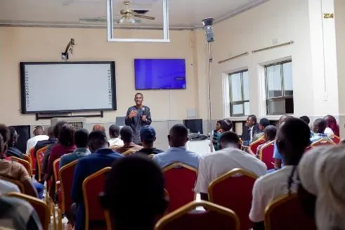
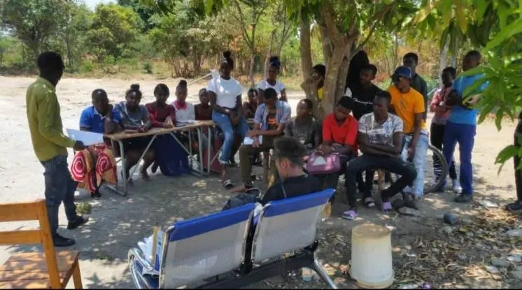
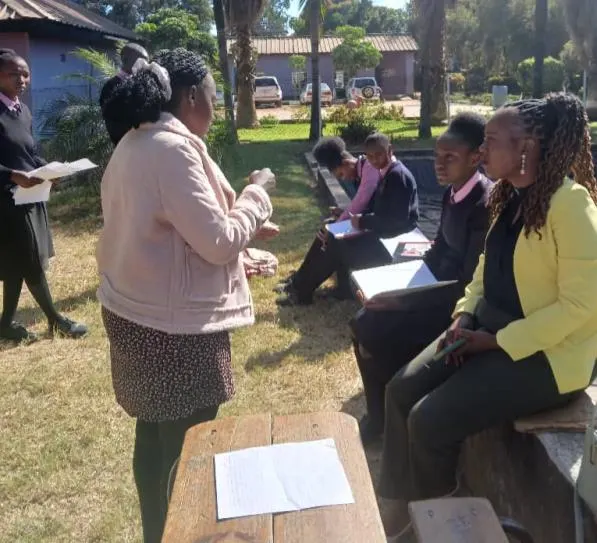

To empower the youth of Chingola through skills development, leadership training, entrepreneurship, health advocacy, Climate Change and inclusive partnerships.
Youth participation in leadership & governance, including representing Chingola District at the 2025 national Youth Indaba.

Entrepreneurship and skills development training.

Health talks and campaigns on menstrual health and HIV/AIDS.
Climate action and environment debates, and dialogues on mining and climate justice.

Mentorship and leadership platforms for schools on the Copperbelt.